🧭
운항기록 — 백구의 항해일지Voyage Log — Baekgu's Journal
스토리 진행에 따라 해금되는 항해 연대기 · 페이즈 1~6 (육하원칙 서술 확장본)A voyage chronicle unlocked as the story unfolds · Phases 1–6 (expanded, 5W1H)
제1지 · 각성 (행성 1~5)Log I · Awakening (Planets 1–5)연대기 8 / 8Chronicle 8 / 8📖 일지 공개Journal
💬 컷씬 CH01-A — 프록시마B "100년의 잠"Cutscene CH01-A — Proxima B "A 100-Year Sleep"
백구Baekgu "…사령관, 일어나세요. 프록시마B 궤도입니다. 봉쇄력 100년이 지났어요.""…Commander, wake up. We're in Proxima B orbit. A hundred years have passed."
사령관Commander "…백구냐. 대체… 얼마나 잤지.""…Baekgu. How long… was I out?"
백구Baekgu "100년 3개월 12일. 에너지 7%. 지금 안 일어나면 둘 다 영영 못 깨어납니다.""100 years, 3 months, 12 days. Power at 7%. If we don't move now, neither of us wakes again."
사령관Commander "…엔진부터 살린다. 표면 고철이라도 긁어모으자.""…Engine first. Scrape together any scrap on the surface."
💬 컷씬 CH01-B — 버나드 프라임 "볼프로 간다"Cutscene CH01-B — Barnard Prime "To Wolf"
백구Baekgu "버나드 프라임의 볼프 교역소. 100년 전 무역 루트인데, 아직 운영 중이에요.""Wolf Station on Barnard Prime. A century-old trade route — still running."
마르코 폴로Marco Polo "빈손으로 별을 건널 순 없지. 내 별 지도가 길을 열어줄 거요. 같이 갑시다.""You can't cross the stars empty-handed. My charts will open the way. Let's go together."
볼프 노인Old Trader "(데이터 칩을 건네며) 이것도. 100년 전 어떤 조선인이 두고 갔는데, '거북선'이라 했소.""(handing over a chip) Take this too. A Joseon man left it a century ago — called it the 'Turtle Ship.'"
💬 컷씬 — 티가든 "VOSTOK의 잠"Cutscene — Teegarden "VOSTOK Adrift"
백구Baekgu "티가든 외곽에 옛 소련제 탐사선 VOSTOK가 표류 중입니다. …생체 반응, 살아있어요.""The old Soviet probe VOSTOK is adrift off Teegarden. …Life signs. Someone's alive."
가가린Gagarin "(눈을 뜨며) 별은… 여전히 아름답군. 날 깨운 게 자넨가.""(waking) The stars… still beautiful. You woke me?"
사령관Commander "지구로 돌아갈 길을 찾고 있소.""We're looking for the way back to Earth."
가가린Gagarin "그럼 나도 함께 가지. 인류 최초로 별에 나간 사람이, 마지막 귀환도 함께해야 도리지.""Then I'll come. The first man to the stars should be there for the last journey home."
💬 컷씬 — 함교 "진실"Cutscene — Bridge "The Truth"
마르코Marco "정보 칩 해독 끝났어. 지구는 멸망한 게 아냐 — 봉쇄됐을 뿐이야.""The chip's decoded. Earth didn't fall — it's blockaded."
백구Baekgu "치크스 제국과 우르사 메이저가 100년째 태양계를 시공간 안개로 막고 있어요.""The Chiks Empire and Ursa Major have sealed the Solar System in spacetime fog for a century."
마르코Marco "이순신 캡슐 좌표 — 우르사이 마요리스. 치크스 Ring 1, 들어가면 바로 적대 상태가 돼.""Yi Sun-sin's coordinates — Ursae Majoris. Chiks Ring 1. Enter, and we go hostile at once."
사령관Commander "…가자.""…Let's go."

🐕 백구의 항해 일지 — 제1지 각성Baekgu's Journal — Log I, Awakening
01. 기상01. Reveille
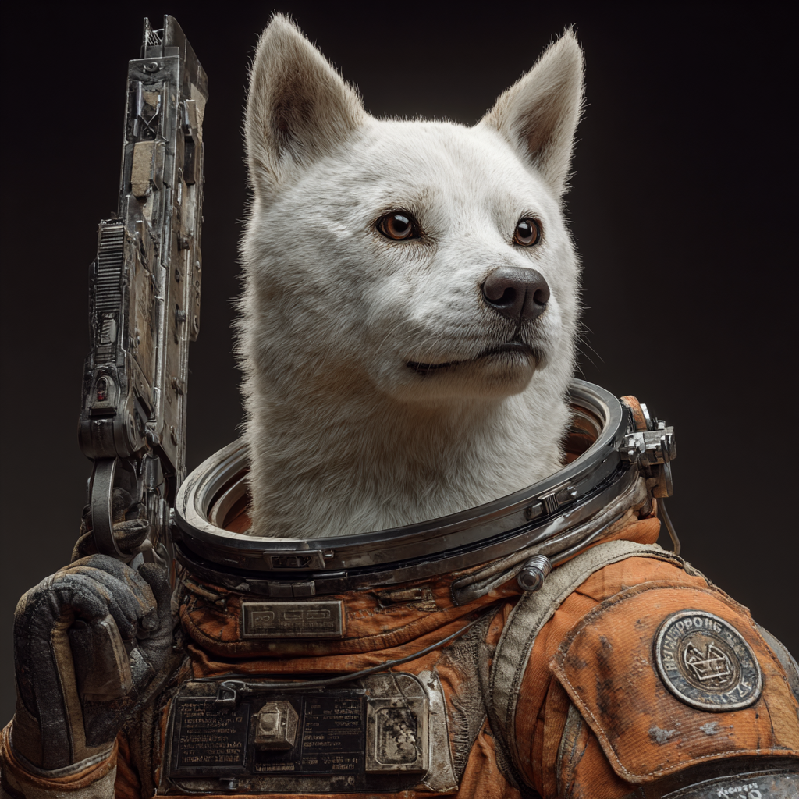
백구 · 사령관Baekgu · Commander
봉쇄력 100년 3월 12일B.E. 100 · Mar 12
프록시마B · 1링Proxima B · Ring 1
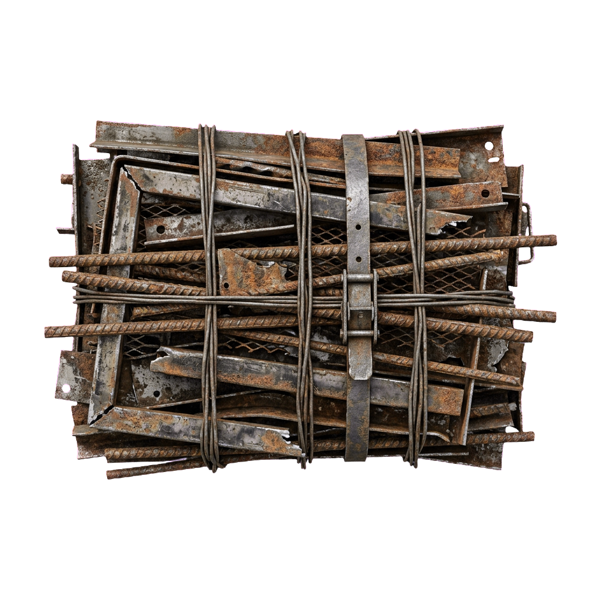
고철 프레임Scrap Frame
봉쇄력 100년 3월 12일, 사령관이 냉동 수면에 잠긴 지 정확히 100년 3개월 12일째 되던 새벽이었다. 우리가 떠 있던 곳은 변경의 첫 행성 프록시마B의 궤도, 단 한 척 남은 낡은 {함선} 안이었다. 에너지 잔량이 7%까지 떨어지자, 나 백구는 더는 기다릴 수 없다고 판단했다. 지금 깨우지 않으면 우리 둘 다 영영 잠들어 일어나지 못할 것이기 때문이었다. 나는 수면 캡슐에 전류를 흘려 넣고 경보를 울려 사령관을 깨웠다. 눈을 뜬 그가 처음 본 것은 어둠 속에서 꼬리를 흔드는 나였다 — "…백구냐." 우리는 곧장 프록시마B 표면으로 내려가 버려진 고철 프레임을 긁어모았고, 그것을 엮어 {함선}의 죽은 엔진을 되살렸다. 엔진이 굉음과 함께 다시 불을 뿜던 그 순간, 우리의 항해는 비로소 시작되었다.
It was B.E. 100, the 12th of March — the dawn marking exactly 100 years, 3 months, and 12 days since the Commander entered cryo-sleep. We drifted in the orbit of Proxima B, the first frontier world, aboard our single battered {함선}. When the reserves fell to 7%, I, Baekgu, decided I could wait no longer: if I did not wake the Commander now, we would both sleep forever. So I ran a current into the sleep capsule and sounded the alarm. The first thing the Commander saw was me, wagging my tail in the dark — "…Baekgu?" We dropped straight to the surface of Proxima B, scavenged a Scrap Frame from the wreckage, and used it to revive the {함선}'s dead engine. The moment that engine roared back to life, our voyage truly began.
02. 첫 거래02. First Trade
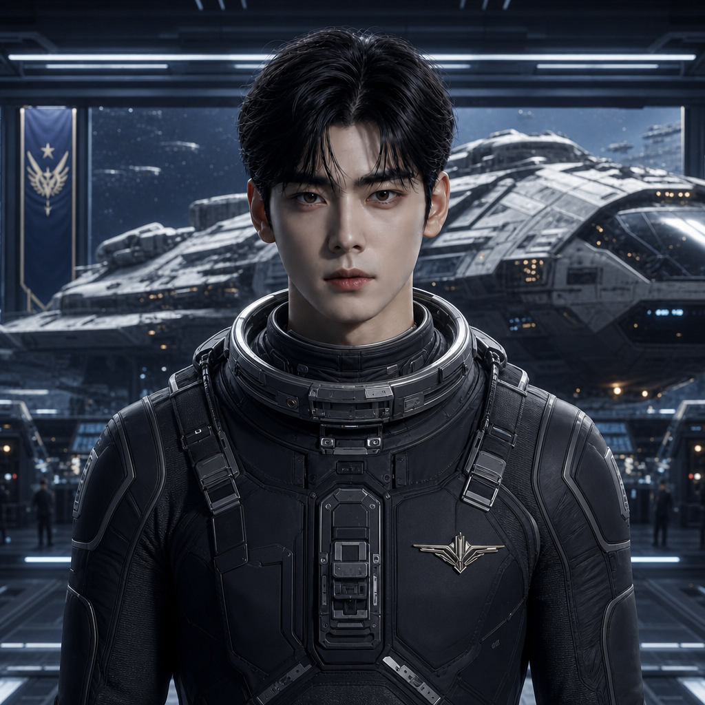
사령관 · 백구Commander · Baekgu
봉쇄력 100년 3월B.E. 100 · Mar
버나드 프라임(볼프 교역소) ~ 티가든Barnard Prime (Wolf Station) – Teegarden
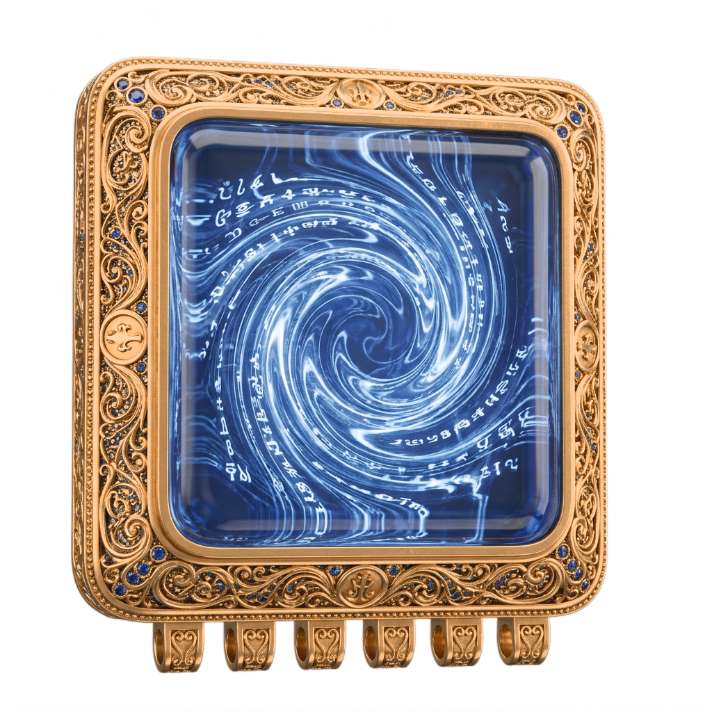
아우레우스 정보 칩Aureus Data Chip
봉쇄력 100년 3월, 각성 직후의 일이다. 깨어났다고 끝이 아니었다 — 크레딧 한 푼 없이는 부품도 연료도 살 수 없었기에, 사령관과 나는 항해를 이어갈 자본을 마련하려고 인접 행성 버나드 프라임의 볼프 교역소로 향했다. 거친 변두리 항구였지만 빈손인 우리에겐 유일한 출발점이었다. 우리는 프록시마B에서 주워 온 부품을 팔고 시세 차익이 나는 화물을 되사는 방식으로 첫 거래를 텄고, 금고에 처음으로 크레딧이 쌓였다. 이어 황금의 금융 항구 아우레우스에서, 한 밀무역상이 헐값에 떠넘긴 아우레우스 정보 칩 하나를 손에 넣었다. 겉보기엔 잡동사니였지만 그 안에는 치크스 주파수로 변조된 신호가 잠들어 있었다. 나 백구는 직감했다 — 이것이 거대한 무언가의 문을 여는 열쇠라는 것을.
B.E. 100, March — just after the awakening. Waking up was not the end: without a single credit we could buy neither parts nor fuel, so the Commander and I made for the Wolf Station on neighboring Barnard Prime to raise the capital to keep sailing. It was a rough frontier port, but for two empty-handed travelers it was the only starting line. We opened our first trade by selling parts scavenged on Proxima B and buying back cargo with a margin, and for the first time credits piled up in the vault. Then, at the golden financial port of Aureus, a smuggler offloaded an Aureus Data Chip onto us for a pittance. It looked like junk, but inside slept a signal scrambled on Chiks frequencies. I, Baekgu, sensed it at once — this was the key to a door onto something vast.
03. 합류03. Comrades
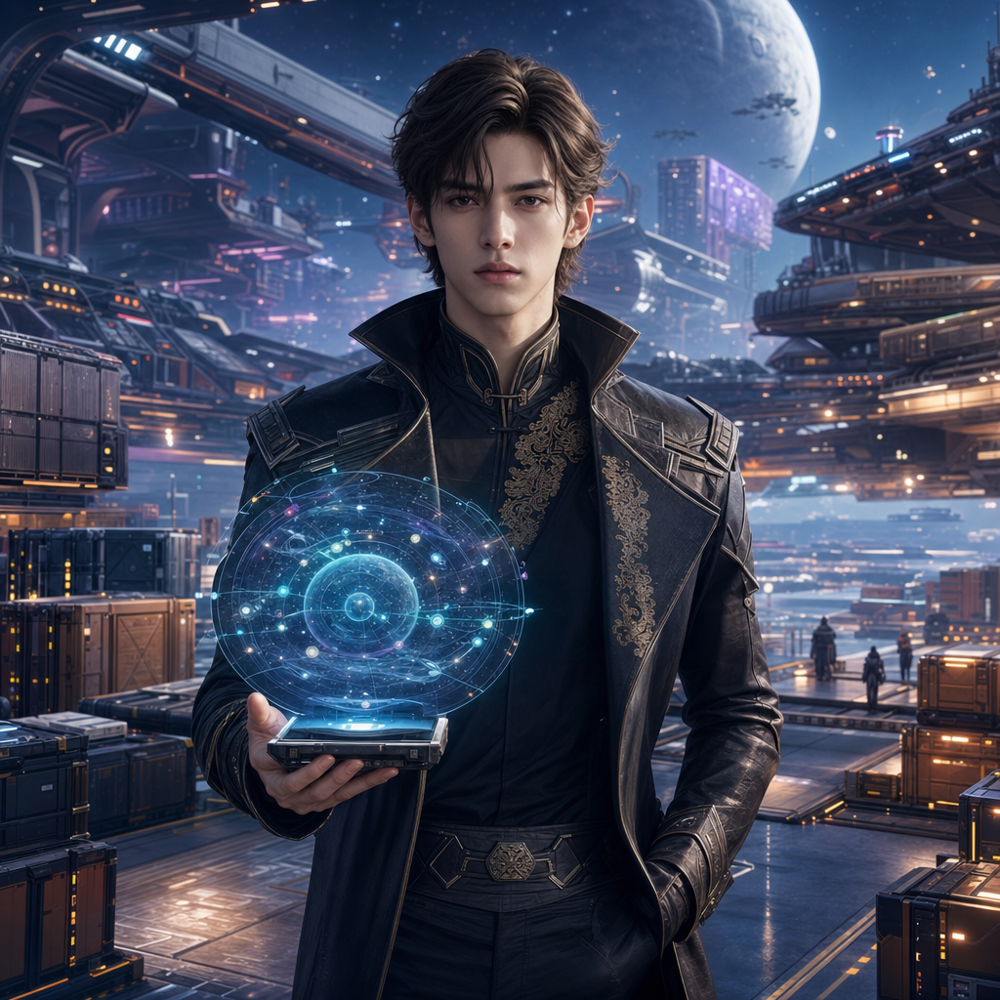
마르코 폴로 · 가가린Marco Polo · Gagarin
봉쇄력 100년 4월B.E. 100 · Apr
티가든 외곽 표류 해역 · VOSTOK 캡슐Wreck-fields off Teegarden · VOSTOK capsule
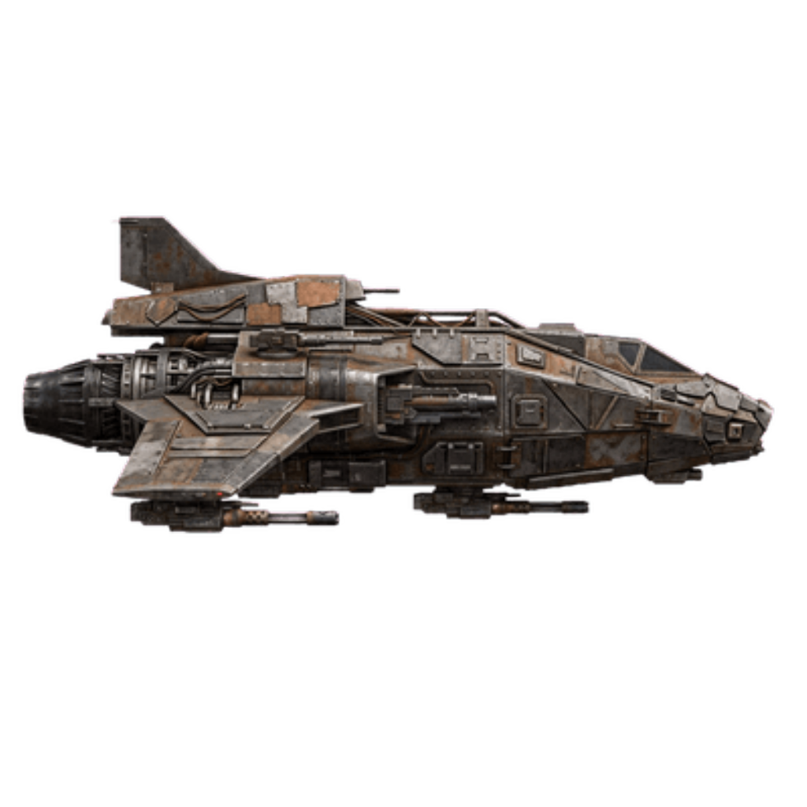
합류한 함선A joined ship
봉쇄력 100년 4월, 티가든 외곽의 잔해 표류 해역을 지나던 우리에게 별들은 동료를 보내주었다. 혼자서는 결코 은하를 건널 수 없었기에, 우리는 떠돌이 상인 마르코 폴로를 함대에 맞아들였다. 평생 변경을 누빈 그의 값을 매길 수 없는 별 지도가 우리의 길을 열어주었다. 이어 우리는 티가든 외곽을 표류하던 옛 소련제 탐사선 VOSTOK 캡슐을 발견해, 그 안에 잠든 인류 최초의 우주 비행사 유리 가가린을 깨워 함대에 합류시켰다. "별은… 여전히 아름답군." 조종석에 앉으며 그가 남긴 말이다. 그의 손끝에서 합류한 {함선}은 살아있는 생물처럼 날렵해졌다. 서로 다른 시대의 이들이 한 함교에 모인 까닭은 단 하나 — 모두가 같은 것을, 돌아갈 집인 지구를 잃었기 때문이다.
B.E. 100, April. As we drifted through the wreck-fields off Teegarden, the stars sent us companions. Knowing we could never cross the galaxy alone, we welcomed the wandering merchant Marco Polo into the fleet; his priceless star charts, drawn over a lifetime in the borderlands, opened our path. Then, off Teegarden, we found the drifting old Soviet probe VOSTOK and woke the man sleeping inside — Yuri Gagarin, the first human ever in space — and he joined us. "The stars… still beautiful." Those were his words as he took the seat. Under his hands the {함선} grew nimble as a living thing. People of different eras gathered on one bridge for a single reason — all had lost the same thing: their home, Earth.
04. 진실04. The Truth
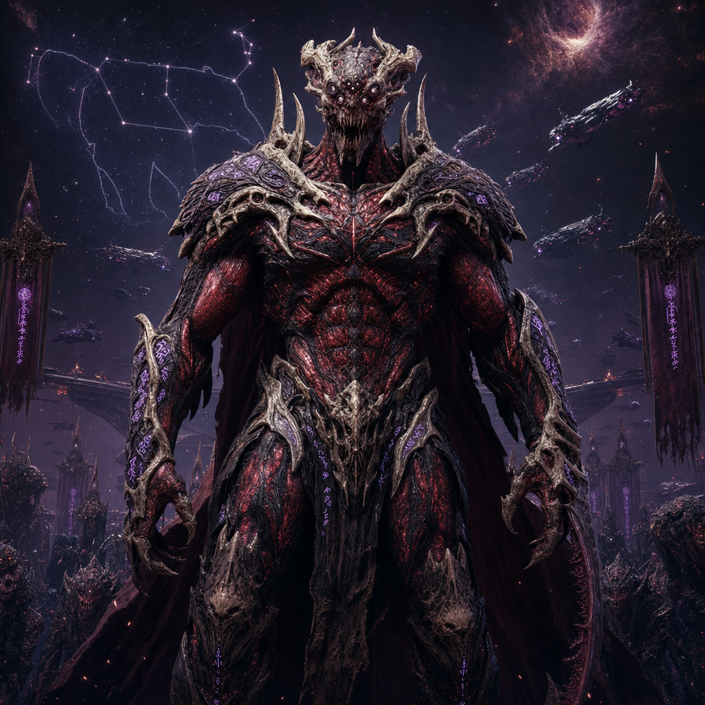
우르사 메이저(정체)Ursa Major (revealed)
봉쇄력 100년 4월B.E. 100 · Apr
함교 → 우르사 알파(우르사이 마요리스)Bridge → Ursa Alpha (Ursae Majoris)
해독된 좌표 칩Decoded coordinate chip
봉쇄력 100년 4월, {함선} 함교에서 우리는 마침내 정보 칩을 완전히 해독했다. 그제야 외면하고 싶던 진실과 마주했다 — 지구는 멸망한 게 아니라 봉쇄돼 있었다. 생체 병기 종족 치크스 제국과 그 우두머리 우르사 메이저가 100년째 태양계를 시공간 안개의 장벽으로 틀어막고 있었던 것이다. 해독된 좌표 칩은 또 하나의 위치를 토해냈다 — 봉쇄 시절 끝까지 저항했던 이순신 장군의 캡슐이 잠든 우르사 알파(우르사이 마요리스) — 치크스 Ring 1의 심장부였다. 사령관은 별 지도의 가장 어두운 항로에 손가락을 얹으며 망설임 없이 말했다. "가자." 우리가 그 어둠으로 뛰어들기로 한 이유는 분명했다 — 갇힌 지구를 해방하고, 마지막 저항자를 구하기 위해서였다. 나는 그 한마디에 모든 회로를 걸었다.
B.E. 100, April. On the {함선}'s bridge we finally decrypted the chip in full, and met the truth we had wanted to avoid — Earth had not fallen; it was blockaded. The bio-engineered Chiks Empire and their lord, Ursa Major, had sealed the solar system behind a wall of spacetime fog for a hundred years. The decoded coordinate chip spat out one more location — the capsule of Admiral Yi Sun-sin, who had resisted to the very end during the blockade: Ursa Alpha (Ursae Majoris), the heart of Chiks Ring 1. The Commander laid a finger on the darkest lane of the star map and said, without hesitation, "Let's go." Our reason for plunging into that dark was plain — to free the imprisoned Earth and rescue its last defender. I staked every circuit I had on that single word.
제2지 · 결집 (행성 6~10)Log II · Gathering (Planets 6–10)연대기 7 / 7Chronicle 7 / 7📖 일지 공개Journal
💬 컷씬 — 아이젠콕 "칩 해독의 열쇠"Cutscene — Eisenkock "Key to the Chip"
밀무역상Smuggler "치크스 주파수… 아이젠콕으로 이어지는 봉쇄의 핵심이오. 내 장비를 빌려주지.""Chiks frequencies… the core of the blockade, leading to Eisenkock. Borrow my rig."
백구Baekgu "아이젠콕 — 치크스가 봉쇄를 떠넘긴 용병 군벌, 크리그의 거점입니다.""Eisenkock — stronghold of Krieg, the mercenaries the Chiks handed the blockade to."
💬 컷씬 — 아이젠콕 지하 감옥Cutscene — Eisenkock Dungeon
테슬라Tesla "크리그 최종 요새는 아이젠콕이야. 지하 감옥에 이순신 장군 캡슐이 수백 년째 봉인돼 있어 — 방패막이로 쓰고 있지.""Krieg's final fortress is Eisenkock. Yi Sun-sin's capsule has been sealed in its dungeon for centuries — used as their shield."
백구Baekgu "적이 영웅의 전술을 빼앗아, 그 전술로 영웅들을 막고 있어요.""They stole a hero's tactics and use them to hold off heroes."
💬 컷씬 — 봉인 해제 "되찾은 전술"Cutscene — Unsealing "Tactics Reclaimed"
이순신Yi Sun-sin "이곳이… 얼마나 흘렀느냐. 나를 깨운 자가 사령관인가. 빚을 졌구나.""How much time… has passed. You woke me, Commander? I am in your debt."
이순신Yi Sun-sin "…내 전술로 나를 가두려 했나. 그 오만이 곧 그들의 무덤이 되리라.""…They caged me with my own tactics. That arrogance will be their grave."
테슬라Tesla "번개라면 나도 한몫하지. 연쇄 번개로 포대를 쓸어주마.""Lightning is my trade. My Chain Lightning will sweep their batteries."
💬 컷씬 — 집행관 아이젠클로Cutscene — Enforcer Eisenklau
아이젠클로Eisenklau "여기서 끝이다, 사령관. 우르사 메이저께서 허락한 자는 없다.""This is where it ends, Commander. None pass without Ursa Major's leave."
이순신Yi Sun-sin "아직은 때가 아니다. 다음엔 — 네가 물러설 차례다.""Not yet. Next time — it's your turn to fall back."
백구Baekgu "지금은 후퇴. 도망이 아니라, 더 강해져 돌아오기 위해서예요.""We retreat now — not in flight, but to return stronger."
🐕 백구의 항해 일지 — 제2지 결집Baekgu's Journal — Log II, Gathering
01. 보라빛 독기01. Purple Haze
사령관 · 백구Commander · Baekgu
봉쇄력 100년 5월B.E. 100 · May
티가든 → 아이젠콕 진입 항로Teegarden → Eisenkock approach
변조된 정보 칩Scrambled chip
봉쇄력 100년 5월, 사령관과 나는 치크스의 영역에 처음 발을 들였다. 외곽 항로를 지나 아이젠콕로 향하던 그 길은 사방이 보라빛 독기로 뒤덮여 항법 센서마저 흐려졌다. 아우레우스에서 얻은 변조된 정보 칩은 치크스 주파수로 이중 변조돼 있어 우리 장비만으로는 끝내 풀리지 않았다. 그래서 우리는 한 밀무역상의 통신 장비를 빌려서야 마지막 계층을 해독할 수 있었다. 칩이 가리킨 곳은 아이젠콕 — 치크스가 직접 손을 더럽히지 않으려 외곽 봉쇄를 떠넘긴 용병 군벌, 크리그의 거점이었다. 우리가 이 독기 속으로 들어온 이유는 단 하나, 이순신이 갇힌 봉쇄의 실체를 끝까지 추적하기 위해서였다.
B.E. 100, May. The Commander and I set foot in Chiks space for the first time. The route past the outer lanes toward Eisenkock was drowned in purple toxic haze that clouded even our nav sensors. The scrambled chip from Aureus was double-encrypted on Chiks frequencies and would not yield to our gear alone; only by borrowing a smuggler's comms rig could we peel back the final layer. The chip pointed to Eisenkock — the stronghold of Krieg, the mercenary warlords to whom the Chiks had subcontracted the outer blockade so they need not dirty their own hands. We pushed into that haze for one reason only: to chase the true shape of the blockade that held Yi Sun-sin.
02. 지하 감옥02. The Dungeon
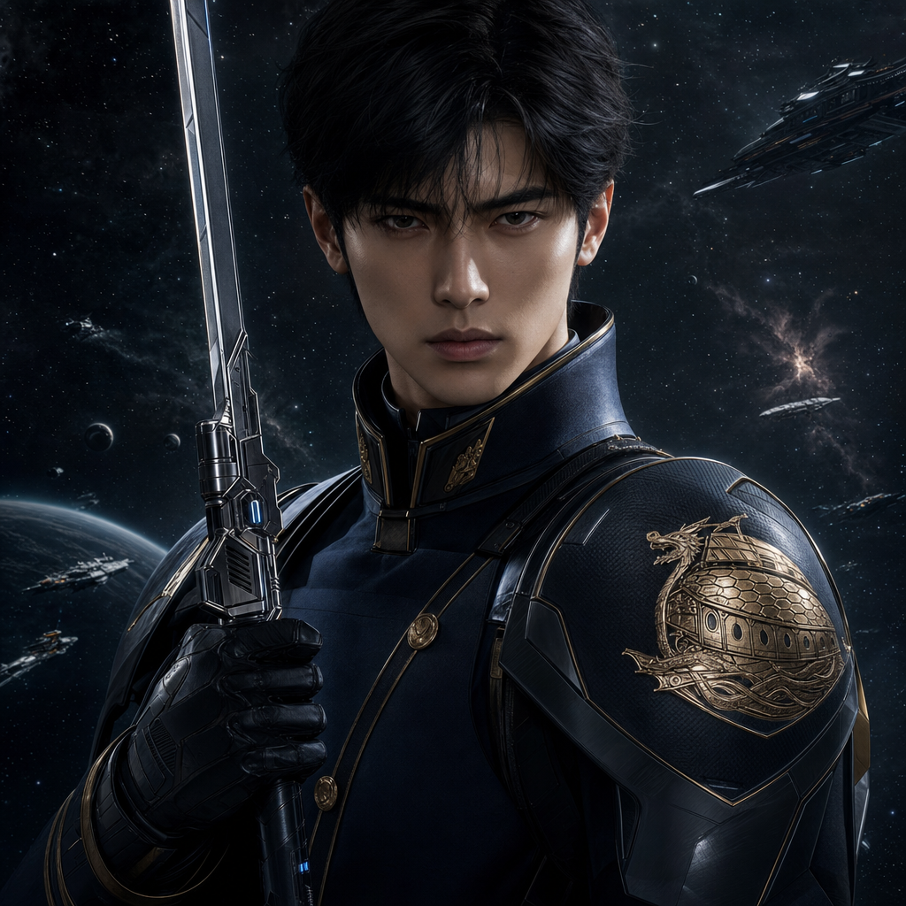
이순신 장군Admiral Yi Sun-sin
봉쇄력 100년 5월B.E. 100 · May
아이젠콕 지하 감옥Eisenkock dungeon
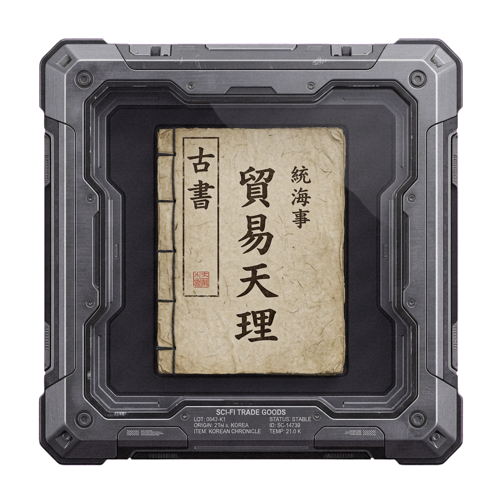
난중일기 영인본Nanjung Diary (facsimile)
봉쇄력 100년 5월, 아이젠콕의 지하 감옥 깊은 곳에서 우리는 끔찍한 광경을 보았다. 그곳엔 이순신 장군이 수백 년째 봉인돼 있었다. 봉쇄 시절 끝까지 물러서지 않았던 단 한 사람을, 적은 죽이는 대신 더 잔인한 방법을 택했다 — 장군의 전술 데이터를 강제로 추출해 크리그 방어 알고리즘의 '살아있는 방패'로 만든 것이다. 그가 남긴 유산인 난중일기 영인본만이 차갑게 보존돼 있었다. 적이 그를 이렇게 가둔 이유는 명백했다. 영웅의 지혜를 빼앗아 그 지혜로 다른 영웅들의 진격을 막기 위해서였다. 우리를 가로막던 견고한 방어선의 정체가 다름 아닌 갇힌 아군의 머릿속이라는 사실에, 나는 회로가 끓는 듯했다.
B.E. 100, May. Deep in the dungeons of Eisenkock we saw a terrible sight. Admiral Yi Sun-sin had been sealed there for centuries. The one man who never yielded during the blockade — the enemy did not kill him; they chose something crueler. They forcibly extracted the Admiral's tactical data and made it the "living shield" of the Krieg defense algorithm. Only his legacy, a facsimile of the Nanjung Diary, lay coldly preserved. The reason they caged him was plain: to steal a hero's wisdom and use that wisdom to halt the advance of other heroes. To learn that the iron defense line blocking us was, in truth, the mind of a captive ally — it set my circuits boiling.
03. 균열03. The Crack
이순신 · 테슬라(합류)Yi Sun-sin · Tesla (joins)
봉쇄력 100년 5월B.E. 100 · May
아이젠콕 봉쇄선Eisenkock blockade line
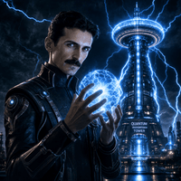
테슬라의 연쇄 번개Tesla's Chain Lightning
봉쇄력 100년 5월, 아이젠콕 봉쇄선 한복판에서 우리는 그를 꺼내기로 했다 — 단순한 구출이 아니라 적의 방패 한가운데를 깨부수는 일이었다. 가가린이 {함선}을 몰아 방어 포화를 뚫는 동안, 나 백구가 알고리즘의 추출 단자를 하나하나 끊어내 마침내 봉인을 풀었다. 이순신 장군이 눈을 뜨자 그를 옭아매던 적의 알고리즘에 균열이 갔다. "…내 전술로 나를 가두려 했나." 그 차가운 목소리에 함대 전체의 사기가 끓어올랐다. 우리가 이 위험을 무릅쓴 이유는 빼앗긴 영웅을 되찾아 적의 방패를 우리의 창으로 바꾸기 위해서였다. 바로 이때 번개의 천재 니콜라 테슬라도 우리 신호에 응답해 합류했고, 그의 연쇄 번개가 봉쇄선 포대를 차례로 침묵시키며 함대의 화력은 한층 거세졌다.
B.E. 100, May. In the very middle of the Eisenkock blockade line we resolved to pull him out — not a mere rescue, but the shattering of the enemy's shield from within. While Gagarin drove the {함선} through the defensive fire, I, Baekgu, severed the algorithm's extraction terminals one by one until the seal broke at last. The moment Yi Sun-sin opened his eyes, cracks spread through the enemy algorithm that bound him. "…So they caged me with my own tactics." At that cold voice the whole fleet's morale boiled over. We braved the danger to reclaim a stolen hero and turn the enemy's shield into our spear. It was then that Nikola Tesla, the genius of lightning, answered our signal and joined us; his Chain Lightning silenced the blockade batteries one after another, and our firepower grew fiercer still.
04. 집행관04. The Enforcer
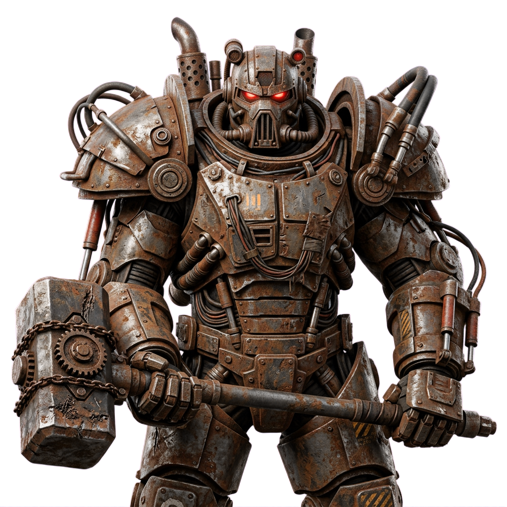
집행관 아이젠클로(크리그)Enforcer Eisenklau (Krieg)
봉쇄력 100년 6월B.E. 100 · Jun
아이젠콕 외곽 전역Eisenkock outer theater
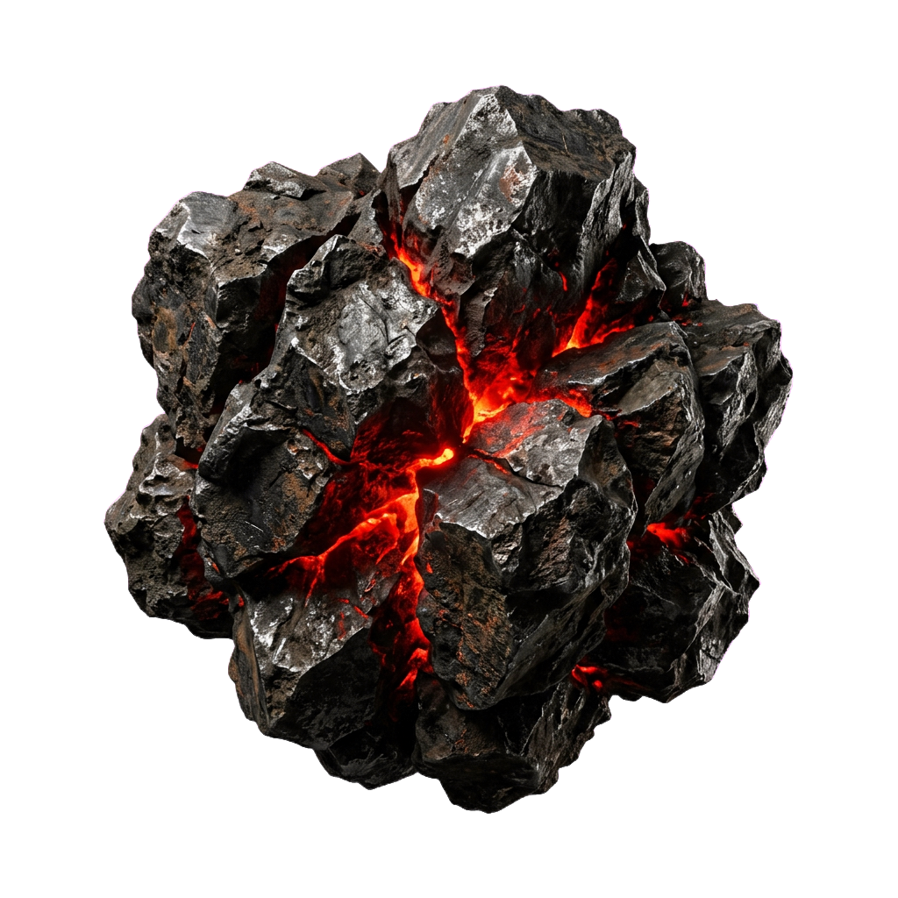
크리그 무기 원석Krieg Weapon Ore
봉쇄력 100년 6월, 아이젠콕 외곽 전역에서 치크스의 봉쇄 집행관이 마침내 모습을 드러냈다 — 크리그의 아이젠클로였다. 강철 같은 의지와 강철 같은 함대를 거느렸지만, 나는 그를 보며 알았다. 저자는 주인이 아니라 우르사 메이저의 손발에 불과하다는 것을. 그의 함대를 지탱하는 크리그 무기 원석이 행성 곳곳에서 끝없이 채굴되고 있었다. 우리는 첫 대면 후 곧장 전략적으로 철수했다. 무모하게 부딪힐 때가 아니었기 때문이다 — 진짜 적은 그 너머의 우르사 메이저였고, 지금의 전력으론 집행관 하나조차 버거웠다. 우리가 후퇴한 것은 도망이 아니라, 더 강해져 돌아오기 위해서였다. "다음엔, 네가 물러설 차례다." 이순신 장군이 멀어지는 적의 함영을 향해 남긴 말이었다.
B.E. 100, June. Across the outer theater of Eisenkock the Chiks' blockade enforcer finally showed himself — Eisenklau of the Krieg. He commanded a will of steel and a fleet to match, yet looking at him I knew: this was no master, only a hand of Ursa Major. The Krieg Weapon Ore that sustained his fleet was being mined without end across the planet. After that first meeting we withdrew at once, by design. It was no time for a reckless clash — the true enemy lay beyond him, Ursa Major, and with our current strength even one enforcer was too much. We retreated not to flee, but to return stronger. "Next time, it's your turn to fall back." So said Admiral Yi Sun-sin to the enemy's receding silhouette.
제3지 · 연대 (행성 11~15)Log III · Solidarity (Planets 11–15)연대기 8 / 8Chronicle 8 / 8📖 일지 공개Journal
💬 컷씬 — 벙커존 "첫 연락"Cutscene — Bunker Zone "First Contact"
맥시모프Maximov "벙커존 지하에서 100년을 기다렸소. 저항군은 살아있소.""We waited a hundred years beneath Bunker Zone. The Resistance lives."
이순신Yi Sun-sin "…옛 전우의 후예들이군. 한 세기를 건너 다시 만났다.""…The heirs of old comrades. We meet again, a century apart."
💬 컷씬 — 벙커존 "연대 협약"Cutscene — Bunker Zone "The Alliance"
맥시모프Maximov "정보도, 보급도, 항로도 나눕시다. 지구로 가는 길은 멀지만, 우린 100년이나 그 길을 지켜왔소.""Share intel, supply, routes. The road to Earth is long — but we've guarded it a hundred years."
사령관Commander "이제 우린 혼자가 아니오.""Now we are not alone."
💬 컷씬 — "첩자 오그렌"Cutscene — "The Spy, Ogren"
마르코Marco "벙커존~뉴 마스 오딧세이 보급망이 새고 있어. 크리그 이중 첩자 '오그렌'이야.""The Odyssey line between Bunker Zone and New Mars is leaking. A Krieg double agent — 'Ogren.'"
백구Baekgu "동맹의 신뢰는, 한 번 지켜내야 비로소 진짜가 됩니다.""An alliance's trust only becomes real once it's been defended."
💬 컷씬 — 장영실 "거북선 설계도"Cutscene — Jang Yeong-sil "The Turtle Blueprint"
장영실Jang Yeong-sil "거북선 — 슈멜츠의 용광로라면, 내 손으로 완성시키겠소.""The Turtle Ship — with the furnaces of Schmelz, I shall complete it myself."
백구Baekgu "아이젠클로의 다음 거점은 포지 행성 슈멜츠. 이제 우리가 추격하는 쪽입니다.""Eisenklau's next base is the forge world Schmelz. Now we are the hunters."
🐕 백구의 항해 일지 — 제3지 연대Baekgu's Journal — Log III, Solidarity
01. 에코 기지01. Echo Base
이순신 · 저항군 후예Yi Sun-sin · Resistance heirs
봉쇄력 100년 6월B.E. 100 · Jun
벙커존 · 에코 기지Bunker Zone · Echo Base
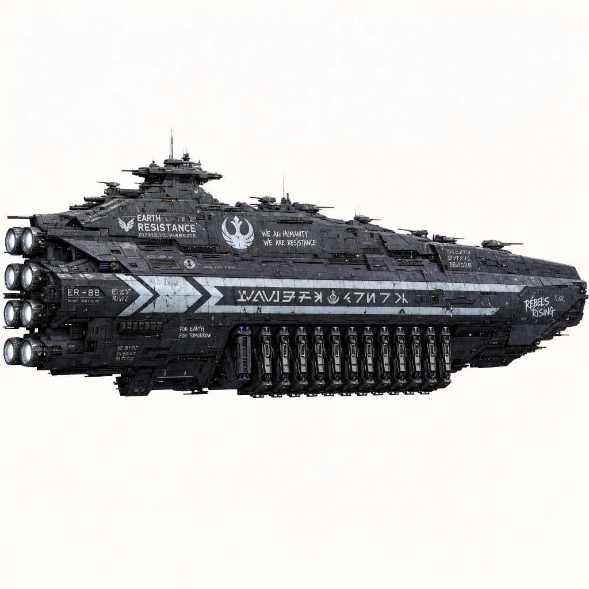
지구저항군 함선Resistance ship
봉쇄력 100년 6월, 후퇴한 우리에게 다음 길을 알려준 것은 이순신 장군의 기억이었다. 그는 옛 전우들의 후예를 떠올렸고, 우리는 벙커존의 얼어붙은 지각 아래 숨은 저항군의 '에코 기지'로 향했다. 그곳 사람들은 봉쇄 이전 장군과 어깨를 맞대고 싸웠던 선조들의 후손이었다. 그들은 100년 동안 차가운 지하에서 등불 하나로 지구의 기억을 지켜왔고, 그들이 몰던 지구저항군 함선이 격납고에 줄지어 있었다. 장군이 이 잊힌 기억을 되짚어 우리를 이곳으로 이끈 이유는, 흩어진 인류의 저항 세력과 손잡기 위해서였다. 한 세기를 건넌 재회 앞에서, 나는 그 자리의 공기가 떨리는 것을 센서로 느꼈다.
B.E. 100, June. What pointed our retreat toward its next road was Admiral Yi Sun-sin's memory. He recalled the heirs of his old comrades, and we made for the Resistance's "Echo Base," hidden beneath the frozen crust of Bunker Zone. The people there were descendants of those who had once fought shoulder to shoulder with the Admiral before the blockade. For a hundred years they had guarded the memory of Earth in the cold underground by the light of a single lamp, and their Resistance ships stood in rows in the hangar. The Admiral retraced this forgotten memory and led us here for one purpose: to join hands with the scattered remnants of human resistance. Before that reunion a century in the making, I felt the very air tremble through my sensors.
02. 연대 협약02. The Alliance
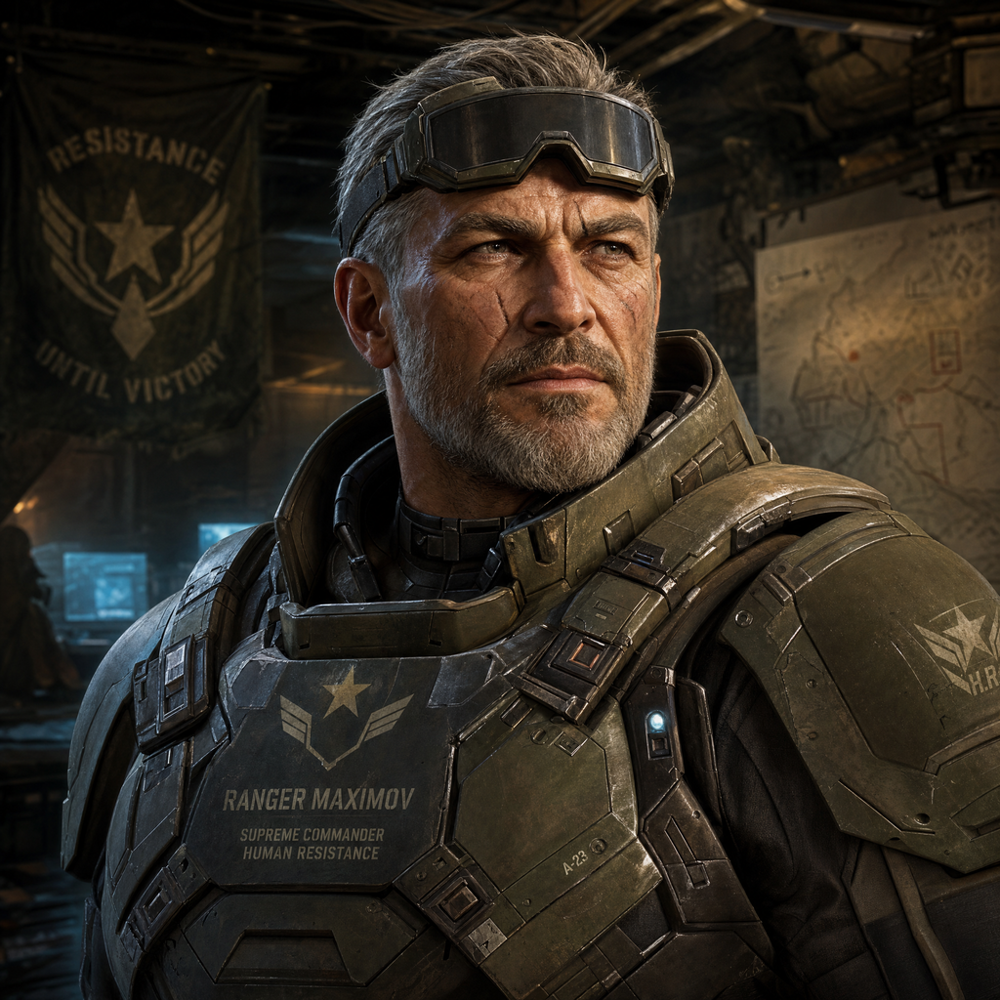
총사령관 맥시모프Commander Maximov
봉쇄력 100년 7월B.E. 100 · Jul
벙커존 저항군 본부Bunker Zone Resistance HQ
저항군 연합 함대Allied Resistance fleet
봉쇄력 100년 7월, 벙커존 저항군 본부에서 우리는 저항군 총사령관 레인저 맥시모프와 마주 앉았다. 오래 갇혀 살아온 자 특유의 단단함이 그의 눈에 있었다. 우리는 정보와 보급, 그리고 항로를 함께 나누는 연대 협약을 맺어 저항군 연합 함대를 꾸렸고, 그 서명 위에서 처음으로 혼자가 아니게 되었다. "지구로 가는 길은 멀지만, 우린 그 길을 100년이나 지켜왔소." 맥시모프의 그 말이 오래 남았다. 우리가 이 동맹을 맺은 이유는 분명했다 — 단독으로는 결코 치크스의 봉쇄를 깰 수 없었기 때문이다. 우리가 잠든 100년 동안 누군가는 깨어서 그 길을 지키고 있었다는 사실은, 외로운 항해라 믿었던 우리에게 가장 큰 위로였다.
B.E. 100, July. At the Bunker Zone Resistance headquarters we sat down with Resistance commander Ranger Maximov. In his eyes was the hardness peculiar to one who has lived long in confinement. We forged an alliance to share intelligence, supply, and routes, raising an allied Resistance fleet, and upon that signature we were, for the first time, no longer alone. "The road to Earth is long — but we've guarded it for a hundred years." Maximov's words lingered. Our reason for the alliance was clear: alone, we could never break the Chiks blockade. To learn that, through the hundred years of our sleep, someone had stayed awake guarding that road was the greatest comfort to us who had believed our voyage a lonely one.
03. 첩자03. The Spy
크리그 첩자 오그렌Krieg spy Ogren
봉쇄력 100년 7월B.E. 100 · Jul
벙커존 ~ 뉴 마스(오딧세이 보급망)Bunker Zone – New Mars (Odyssey line)
새어나간 보급Leaked supplies
봉쇄력 100년 7월, 그러나 기쁨은 길지 않았다. 벙커존과 뉴 마스를 잇는 오딧세이 보급망 안에 크리그의 이중 스파이 '오그렌'이 숨어 있었다. 보급선이 자꾸 적에게 새어 나가고 매복이 끊이지 않던 이유가 바로 그였다. 우리는 새어나간 보급의 흔적을 단서 삼아, 통신 로그를 역추적하고 보급의 흐름을 거꾸로 따라가 그를 색출했다. 정체가 드러나자 오그렌은 발악했지만, 마르코 폴로의 정보망과 이순신의 매복 전술 앞에 결국 격퇴됐다. 우리가 그를 끝까지 색출한 이유는, 한 번 지켜내야 비로소 진짜가 되는 동맹의 신뢰를 증명하기 위해서였다. 그날 우리는 그것을 증명했다.
B.E. 100, July. But joy was brief. Within the Odyssey line linking Bunker Zone and New Mars lurked a Krieg double agent, "Ogren." He was the very reason convoys kept leaking to the enemy and ambushes never ceased. Taking the trail of those leaked supplies as our clue, we traced the comms logs backward and followed the flow of provisions in reverse until we rooted him out. When unmasked, Ogren thrashed, but before Marco Polo's information network and Yi Sun-sin's ambush tactics he was at last driven off. We hunted him to the end to prove the trust of an alliance — a trust that only becomes real once it has been defended. That day, we proved it.
04. 거북선 설계도04. The Turtle Blueprint
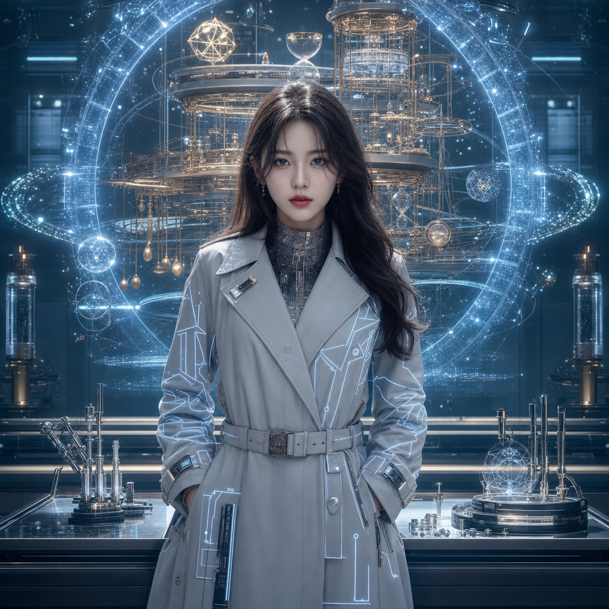
장영실(합류)Jang Yeong-sil (joins)
봉쇄력 100년 8월B.E. 100 · Aug
벙커존Bunker Zone
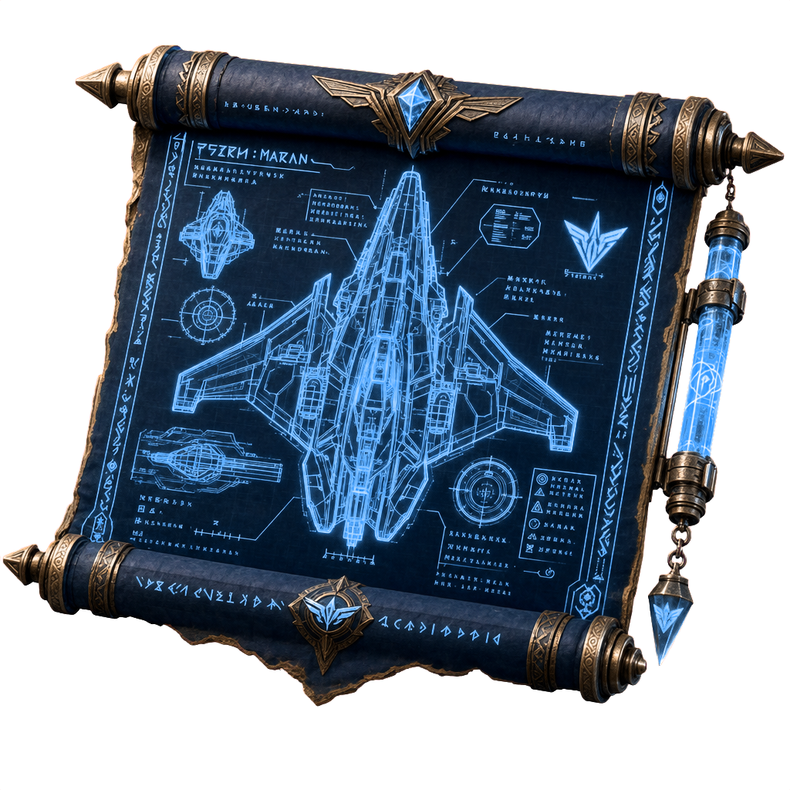
거북선 설계도Turtle Ship blueprint
봉쇄력 100년 8월, 벙커존에서 우리 항해의 판도를 바꿀 인물이 합류했다 — 천재 기술자 장영실이었다. 그가 낡은 거북선 설계도를 함교 탁자에 펼치며 조용히 선언했다. "거북선 — 내 손으로 완성시키겠소." 저항군은 그동안 비밀리에 모아 온 반물질 비축분을 내어주었고, 우리는 흩어진 설계도 단편을 맞춰 완전한 한 장으로 복원했다. 우리가 이 전설의 함선을 손에 넣으려 한 이유는, 봉쇄 집행관 아이젠클로를 끝장낼 결전 병기가 절실했기 때문이다. 동시에 그의 다음 거점이 포지 행성 슈멜츠라는 정보도 입수했다. 도망치던 우리가, 이제 추격하는 쪽이 되었다.
B.E. 100, August. At Bunker Zone a figure who would change the whole course of our voyage joined us — the genius engineer Jang Yeong-sil. Unrolling an old Turtle Ship blueprint on the bridge table, he declared quietly, "The Turtle Ship — I shall complete it with my own hands." The Resistance gave up the antimatter stockpile they had secretly gathered, and we pieced the scattered blueprint fragments into one complete sheet. We sought this legendary vessel because we desperately needed a decisive weapon to finish the blockade enforcer, Eisenklau. At the same time we learned his next stronghold was the forge world, Schmelz. We, who had been fleeing, were now the ones in pursuit.
제4지 · 거북선 (행성 16~20)Log IV · The Turtle Ship (Planets 16–20)연대기 7 / 7Chronicle 7 / 7📖 일지 공개Journal
💬 컷씬 — 슈멜츠 "추격"Cutscene — Schmelz "The Pursuit"
이순신Yi Sun-sin "슈멜츠 — 적의 공장 한복판에서, 적을 끝낼 배를 만든다.""On Schmelz — in the heart of the enemy's forge, we build the ship that ends them."
백구Baekgu "생체 병기 코어가 여기서 찍혀 나옵니다. 보급부터 끊어야 해요.""Bioweapon cores are stamped out here. We cut the supply first."
💬 컷씬 — "공장의 불씨"Cutscene — "Embers in the Forge"
공장 노동자Worker "우린… 끌려온 사람들이오. 정말 우릴 도울 셈이오?""We were… dragged here. Will you truly help us?"
마르코Marco "불씨 하나면 충분하오. 안에서부터 무너뜨립시다.""One ember is enough. We bring it down from within."
💬 컷씬 — "거북선, 일어서다"Cutscene — "The Turtle Ship Rises"
장영실Jang Yeong-sil "슈멜츠 격납고에서 거북선 완성이오. 이제 — 적이 우리를 두려워할 차례요.""The Turtle Ship is complete, here in the Schmelz hangar. Now — it's the enemy's turn to fear us."
💬 컷씬 — 글리제 경매 "정복왕"Cutscene — Gliese Auction "The Conqueror"
광개토대왕Gwanggaeto "글리제 경매장에서 본 그 깃발 아래라면, 다시 한 번 정복하리라.""Under the banner I saw at the Gliese auction, I shall conquer once more."
넬슨Nelson "해상 봉쇄든 우주 봉쇄든, 뚫는 이치는 같소. 내가 길을 읽지.""Sea blockade or void blockade, the breaking of it is the same. I'll read the way."
🐕 백구의 항해 일지 — 제4지 거북선Baekgu's Journal — Log IV, The Turtle Ship
01. 포지 행성01. The Forge World
크리그(공장)Krieg (the forge)
봉쇄력 100년 8월B.E. 100 · Aug
슈멜츠 · 포지 행성Schmelz · forge world
크리그 무기 원석Krieg Weapon Ore
봉쇄력 100년 8월, 우리는 추격 끝에 포지 행성 슈멜츠에 도착했다 — 마그마가 끝없이 솟구치는 크리그의 무기 공장이었다. 행성 전체가 하나의 거대한 대장간 같았고, 공기마저 쇳물 냄새로 무겁게 가라앉아 {함선}의 외피 온도 경고가 쉴 새 없이 울렸다. 이곳은 봉쇄 집행관 아이젠클로가 직접 감독하며 치크스에 납품할 생체 병기 코어를 찍어내던 곳으로, 크리그 무기 원석이 용광로마다 녹아내리고 있었다. 우리는 마그마 지대를 뚫고 공장 심장부로 잠입했다. 적의 공장 한복판으로 뛰어든 이유는 거북선을 완성하고 집행관의 무기 보급을 끊기 위해서였다. 적을 끝낼 배를 적의 자궁에서 만들겠다는 그 역설이, 사령관의 눈을 빛나게 했다.
B.E. 100, August. Our pursuit brought us to the forge world Schmelz — a Krieg weapons factory where magma erupted without end. The whole planet was one vast smithy; even the air hung heavy with the reek of molten iron, and the {함선}'s hull-temperature alarms never stopped. Here the blockade enforcer Eisenklau personally oversaw the stamping of bioweapon cores for the Chiks, and Krieg Weapon Ore melted down in every furnace. We cut through the magma fields and slipped into the factory's heart. We charged into the very middle of the enemy's forge for one reason — to complete the Turtle Ship and sever the enforcer's flow of weapons. The paradox of building the ship that would end the enemy inside the enemy's own womb made the Commander's eyes shine.
02. 공장의 불씨02. Embers in the Forge
마르코 폴로 · 노동자Marco Polo · workers
봉쇄력 100년 9월B.E. 100 · Sep
슈멜츠 무기 공장Schmelz factory
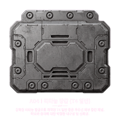
생체 병기 코어Bioweapon core
봉쇄력 100년 9월, 슈멜츠 무기 공장 내부에서 우리는 기계가 아닌 사람을 보았다. 노동자들은 강제로 끌려와 쇳물 곁에서 평생을 보낸 이들이었고, 그들이 조립하던 생체 병기 코어가 컨베이어를 따라 끝없이 흘렀다. 그 절망 속에서도 작은 반란의 불씨가 살아 있었다. 마르코 폴로가 그들과 은밀히 접선해 신뢰를 텄고, 우리는 보급 라인을 끊고 감시 체계를 교란하며 안에서부터 균열을 키웠다. 우리가 이 봉기를 도운 이유는, 적의 전쟁 기계 생산을 멈추고 다가올 결전을 준비하기 위해서였다. 거대한 공장을 끝내 멈춰 세운 것은 우리의 함포가 아니라, 마침내 고개를 든 그들 자신의 손이었다.
B.E. 100, September. Inside the Schmelz factory we saw people, not machines. The workers had been dragged here against their will to spend their lives beside the molten iron, and the bioweapon cores they assembled flowed endlessly along the conveyors. Even in that despair, a small ember of rebellion still lived. Marco Polo made quiet contact with them and won their trust, and we widened the cracks from within — cutting supply lines, jamming the surveillance net, gathering the people. We aided this uprising to halt the enemy's war-machine production and prepare for the coming battle. What finally brought the great forge to a stop was not our cannon, but the hands of the workers themselves, raised at last.
03. 거북선 완성03. The Turtle Ship Rises
장영실Jang Yeong-sil
봉쇄력 100년 9월B.E. 100 · Sep
슈멜츠 격납고Schmelz hangar
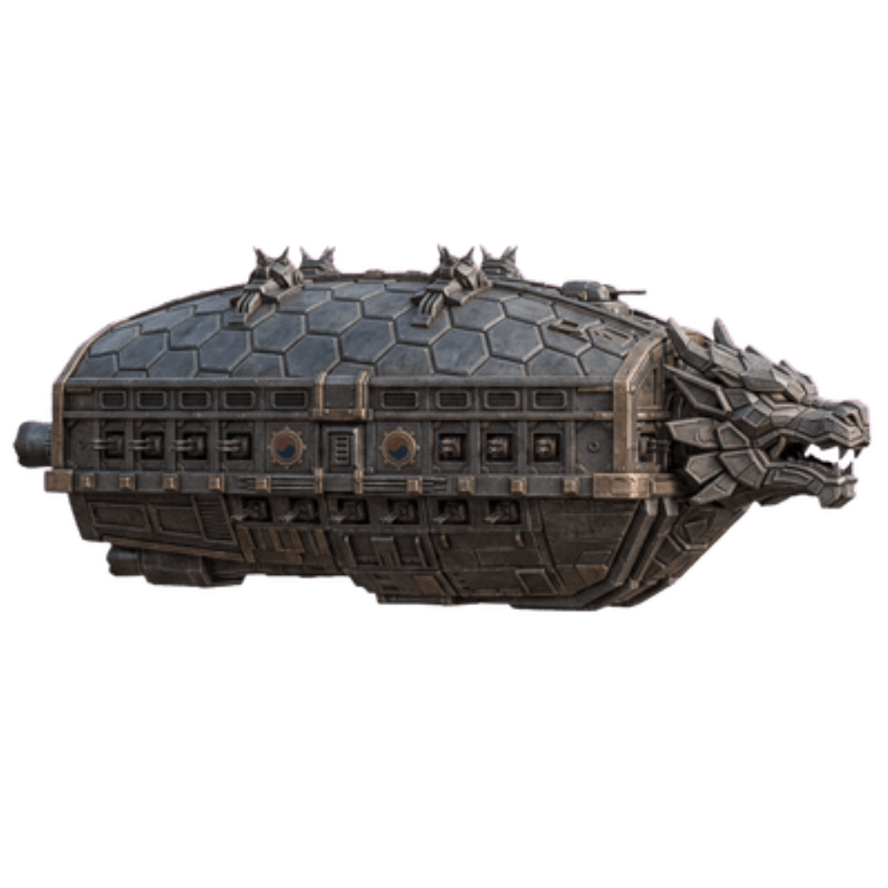
거북선 (LGD01)Turtle Ship (LGD01)
봉쇄력 100년 9월, 그 혼란의 한복판, 슈멜츠 공장의 우리 격납고에서 장영실이 마침내 거북선(LGD01)을 완성했다. 복원한 설계도와 저항군의 반물질, 그리고 점령한 공장 설비를 총동원해 도면 속 전설을 강철의 실체로 깨워낸 것이다. 거북선은 단순한 함선이 아니었다 — 수리비를 40% 덜어주고 탐색의 안개를 걷어내며, 그 위용만으로 적을 떨게 하는 살아있는 요새였다. "이제, 적이 우리를 두려워할 차례요." 장영실이 그을음 묻은 얼굴로 웃었다. 우리가 이 배를 만든 이유는, 봉쇄 집행관과 그 너머의 우르사 메이저를 무너뜨릴 결전 병기가 절실했기 때문이다. 도망치던 폐선의 잔해에서 시작한 우리가, 마침내 전설을 손에 쥐었다.
B.E. 100, September. In the midst of that chaos, in our hangar within the Schmelz factory, Jang Yeong-sil at last completed the Turtle Ship (LGD01). Marshaling the restored blueprint, the Resistance's antimatter, and the captured factory machinery, he woke the legend from the drawings into hard steel. The Turtle Ship was no ordinary vessel — it cut repair costs by 40%, swept away the fog of exploration, and by its presence alone made the enemy tremble: a living fortress. "Now it's the enemy's turn to fear us." Jang smiled, his face streaked with soot. We built this ship because we desperately needed a decisive weapon to bring down the blockade enforcer and, beyond him, Ursa Major. We, who had begun from the wreckage of a derelict, finally held a legend in our hands.
04. 정복왕04. The Conqueror-King
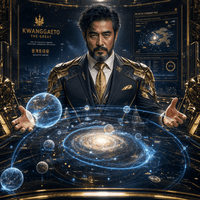
광개토대왕 · 넬슨Gwanggaeto · Nelson
봉쇄력 100년 10월B.E. 100 · Oct
글리제 행성 경매장Gliese planetary auction
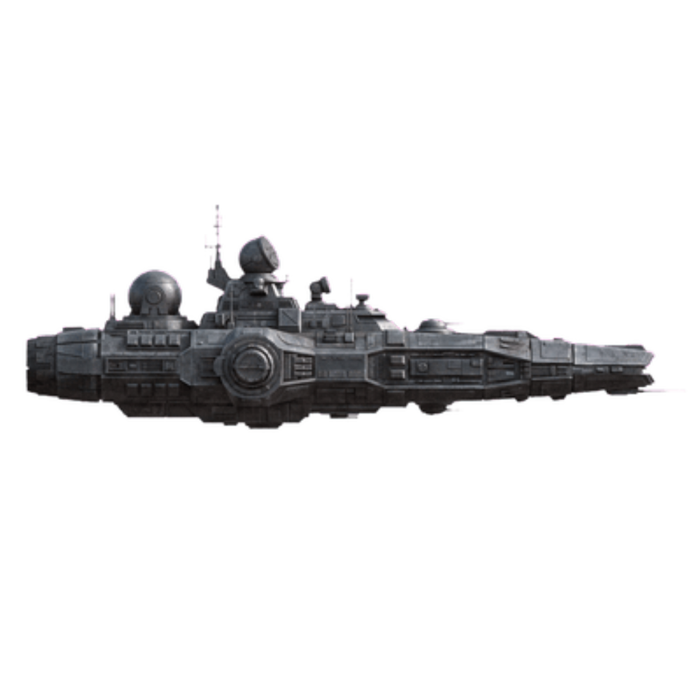
경매 낙찰 유산Auctioned legacy
봉쇄력 100년 10월, 행성 경매장에서 우리는 광개토대왕의 유산을 낙찰받아, 그 위대한 정복왕마저 우리 깃발 아래 모았다. 비슷한 무렵 명장 호레이쇼 넬슨도 함대에 합류해, 해상 봉쇄의 대가가 우주의 봉쇄선을 읽기 시작했다. 이제 함교는 시대를 초월한 영웅들로 가득 찼다. 우리가 이렇게 전설들을 끝까지 그러모은 이유는, 봉쇄 집행관을 끝내고 마침내 우르사 메이저를 칠 최종 전력을 갖추기 위해서였다. 우르사 메이저로 가는 길목엔 여전히 아이젠클로가 버티고 있었지만, 이제 두려움은 우리 쪽이 아니라 그들 쪽에 있었다. 결전의 때가 다가오고 있었다.
B.E. 100, October. At a planetary auction we won the legacy of Gwanggaeto the Great, gathering even that mighty conqueror-king beneath our banner. Around the same time the master admiral Horatio Nelson joined the fleet, and the great mind of naval blockade began to read the blockade lines of space. Now the bridge brimmed with heroes from across the ages. We gathered these legends to the last because we needed the final strength to finish the blockade enforcer and, at last, to strike Ursa Major. Eisenklau still stood astride the road to Ursa Major, but now the fear lay on their side, not ours. The hour of the decisive battle was drawing near.
제5지 · 결전 (행성 21~25)Log V · The Decisive Battle (Planets 21–25)연대기 8 / 8Chronicle 8 / 8📖 일지 공개Journal
💬 컷씬 — 페스작센 "거북선, 총공격"Cutscene — Fessachsen "Turtle Ship, All-Out"
이순신Yi Sun-sin "전 함대 — 페스작센을 향해, 거북선을 따른다.""All ships — toward Fessachsen, follow the Turtle Ship."
가가린Gagarin "거북선 키는 내가 잡지. 100년 묵은 분노, 오늘 풀어주마.""I'll take the Turtle Ship's helm. A century of fury — we loose it today."
💬 컷씬 — "집행관의 최후"Cutscene — "The Enforcer Falls"
아인슈타인Einstein "시간을 되돌리면, 저들의 일제사격은 빗나간다.""Reverse time, and their volley misses."
테슬라Tesla "포대는 내 번개로 침묵시키지.""The batteries — my lightning will silence them."
백구Baekgu "아이젠클로 격파! 이휘소 박사 합류, 세종 AI의 흔적도 찾았어요.""Eisenklau is down! Dr. Lee Hwi-so joins us, and we've found traces of the Sejong AI."
💬 컷씬 — "우르사 메이저"Cutscene — "Ursa Major"
백구Baekgu "아이젠클로를 치웠으니… 이제 우르사 알파 너머의 주인 차례입니다.""Eisenklau is cleared… now the master beyond Ursa Alpha."
우르사 메이저Ursa Major "여기까지 온 자는 너희가 처음이다. 그러나 봉쇄는 영원하다.""None have come this far before. Yet the blockade is eternal."
이휘소Dr. Lee "…아니, 빈틈이 있소. 무적 페이즈의 위상이 어긋나는 순간을 계산했소.""…No — there is a gap. I've calculated the instant its invincible phase falls out of sync."
💬 컷씬 — "봉쇄 해제"Cutscene — "The Blockade Lifts"
백구Baekgu "봉쇄가… 풀렸습니다. 저기, 푸른 점. 지구예요.""The blockade… is broken. There — a blue dot. That's Earth."
사령관Commander "…돌아왔다. 마침내.""…We're back. At last."
🐕 백구의 항해 일지 — 제5지 결전Baekgu's Journal — Log V, The Decisive Battle
01. 어둠의 요새01. Fortress of Darkness
이순신 · 연합 함대Yi Sun-sin · allied fleet
봉쇄력 100년 11월B.E. 100 · Nov
페스작센 · 어둠의 요새Fessachsen · Fortress of Darkness
선두의 거북선Turtle Ship at the van
봉쇄력 100년 11월, 우리는 페스작센, 어둠의 요새 앞에 섰다. 크리그의 방어 포대 40기가 행성을 가시 돋친 갑각처럼 뒤덮어, 그 어떤 함대도 이 봉쇄선 앞에서 무너졌다고 했다. 그러나 이번엔 달랐다 — 거북선을 선두로 저항군과 수퍼비아 문명권의 연합 함대가 전열을 갖췄다. 흩어졌던 세력을 하나로 결집해 진형을 짠 것이다. 우리가 이 죽음의 요새로 향한 이유는, 봉쇄 집행관을 무너뜨리고 우르사 메이저로 가는 마지막 관문을 열기 위해서였다. 함교에서 이순신 장군이 전 함대 채널을 열었고, 가가린이 거북선의 키를 잡았다. 100년간 각자의 어둠 속에서 끓어오르던 분노가, 마침내 한 곳에 모인 순간이었다.
B.E. 100, November. We stood before Fessachsen, the Fortress of Darkness. Forty Krieg defense batteries blanketed the world like a spined carapace, and they said no fleet had ever survived this blockade line. But this time was different — led by the Turtle Ship, the allied fleet of the Resistance and the Superbia civilization formed up. We had gathered scattered powers into one and set our formation. We marched on this fortress of death to bring down the blockade enforcer and open the last gate on the road to Ursa Major. On the bridge Yi Sun-sin opened the all-fleet channel, and Gagarin took the Turtle Ship's helm. A hundred years of fury, smoldering each in its own darkness, gathered in a single place at last.
02. 집행관의 최후02. The Enforcer Falls
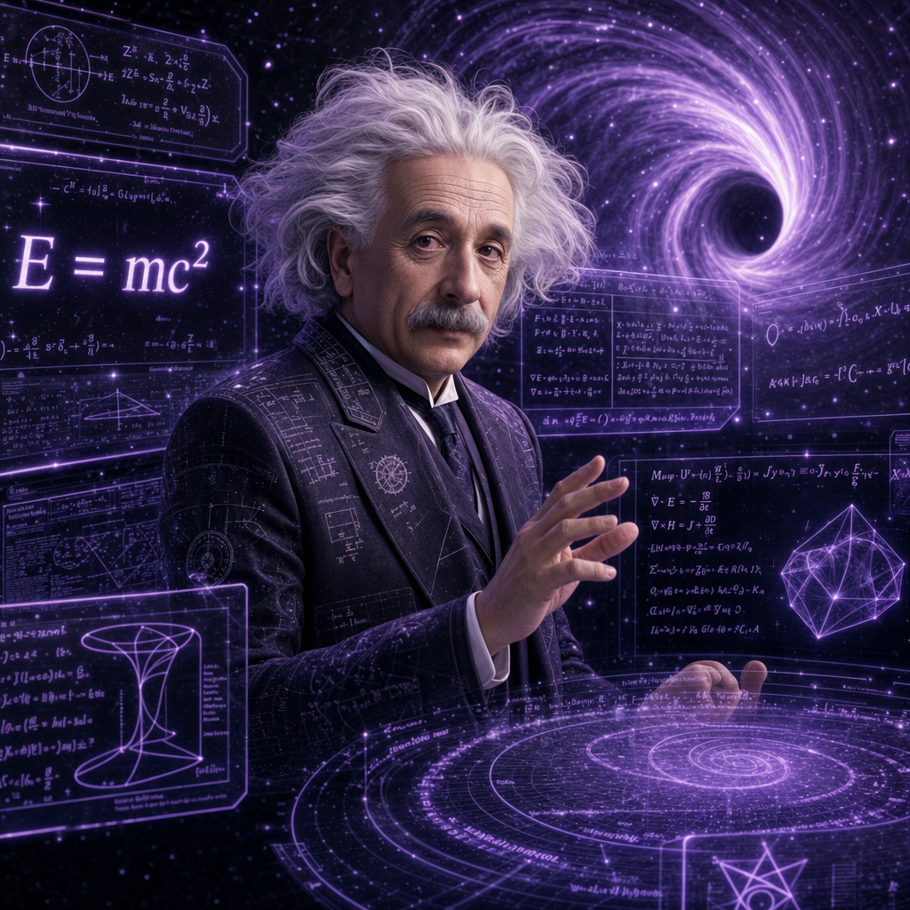
아인슈타인 · 테슬라 · 이휘소Einstein · Tesla · Dr. Lee
봉쇄력 100년 11월B.E. 100 · Nov
페스작센 전역Fessachsen theater
집행관 격파Enforcer defeated
봉쇄력 100년 11월, 페스작센 전역에서 "전 함대 — 거북선을 따른다"는 이순신 장군의 명령이 채널을 타고 울려 퍼졌다. 우리는 진형을 좁혀 거북선을 화살촉 삼아 적진을 갈랐다. 아인슈타인의 시간 역행이 적의 일제사격을 무력화하고 테슬라의 연쇄 번개가 포대를 차례로 침묵시키며, 마침내 우리는 봉쇄 집행관 아이젠클로를 격파했다. 우리가 그를 끝장낸 이유는, 우르사 메이저로 향하는 마지막 장애물을 제거하기 위해서였다. 그가 쓰러지자 두 가지가 따라왔다 — 천재 물리학자 이휘소 박사가 우리에게 합류했고, 심연 깊은 곳에서 잊혀진 세종 AI의 흔적이 발견됐다. 하수인을 치우자, 비로소 그 뒤에 숨은 거대한 것의 윤곽이 드러나기 시작했다.
B.E. 100, November. Across the Fessachsen theater, Admiral Yi Sun-sin's command rang through the channel — "All ships — follow the Turtle Ship." We tightened our formation and split the enemy line with the Turtle Ship as our arrowhead. Einstein's Time Reversal nullified the enemy's volleys and Tesla's Chain Lightning silenced the batteries one by one, until at last we destroyed the blockade enforcer, Eisenklau. We finished him to remove the final obstacle on the road to Ursa Major. With his fall came two things — the genius physicist Dr. Lee Hwi-so joined us, and in the depths we found traces of the forgotten Sejong AI. Once the lackey was cleared, the outline of the vast thing hidden behind him began, at last, to show.
03. 우두머리03. The Master
우르사 메이저Ursa Major
봉쇄력 100년 12월B.E. 100 · Dec
우르사 알파 너머 궤도 요새Orbital fortress beyond Ursa Alpha
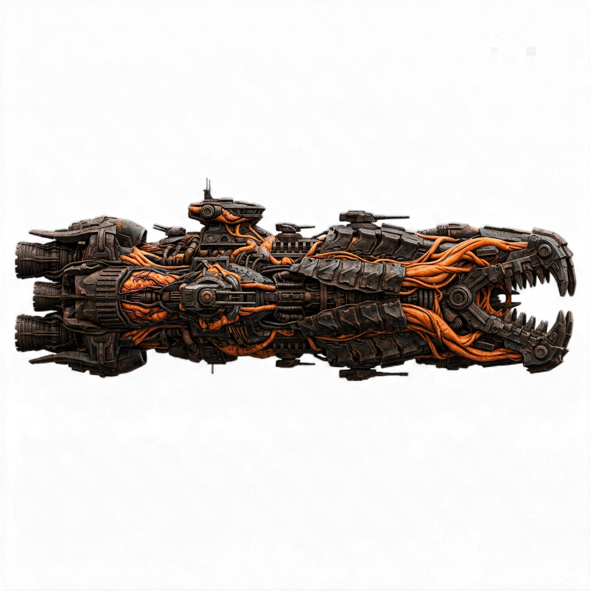
요새 (HP 5,000,000)Fortress (HP 5,000,000)
봉쇄력 100년 12월, 모든 길의 끝에서 우리는 우르사 메이저의 궤도 요새 앞에 섰다. 100년간 지구를 틀어막아 온 치크스의 우두머리이자, HP 5,000,000의 행성 하나만 한 거대 요새였다. 그 앞에서는 거북선조차 작은 점처럼 느껴졌다. 5페이즈에 걸친 사투였다 — 함대가 부서지고 다시 일어서기를 몇 번이고 반복했다. 무적의 페이즈가 우리를 절망케 할 때마다, 이휘소 박사의 계산과 세종 AI의 분석이 그 빈틈을 짚어냈다. 우리가 이 불가능에 맞선 이유는, 지구를 덮은 100년의 봉쇄를 그 근원부터 끊기 위해서였다. 사령관은 단 한 번도 후퇴 명령을 내리지 않았고, 나는 그 곁에서 짖으며 무너지려는 함대의 사기를 끝까지 붙들었다.
B.E. 100, December. At the end of every road we stood before Ursa Major's orbital fortress — the Chiks lord who had choked Earth for a hundred years, a colossal fortress the size of a planet with 5,000,000 HP. Before it even the Turtle Ship felt like a tiny speck. It was a struggle across five phases — the fleet shattered and rose again, over and over. Each time an invincible phase drove us to despair, Dr. Lee Hwi-so's calculations and the Sejong AI's analysis pointed out the gap. We faced this impossibility to cut the hundred-year blockade over Earth from its very root. The Commander never once gave the order to retreat, and I barked at his side, holding the failing fleet's morale together to the end.
04. 봉쇄 해제04. The Blockade Lifts
위대한 화랑 · 백구The great Hwarang · Baekgu
봉쇄력 100년 12월 (귀환)B.E. 100 · Dec (return)
태양계 · 지구 궤도Solar System · Earth orbit
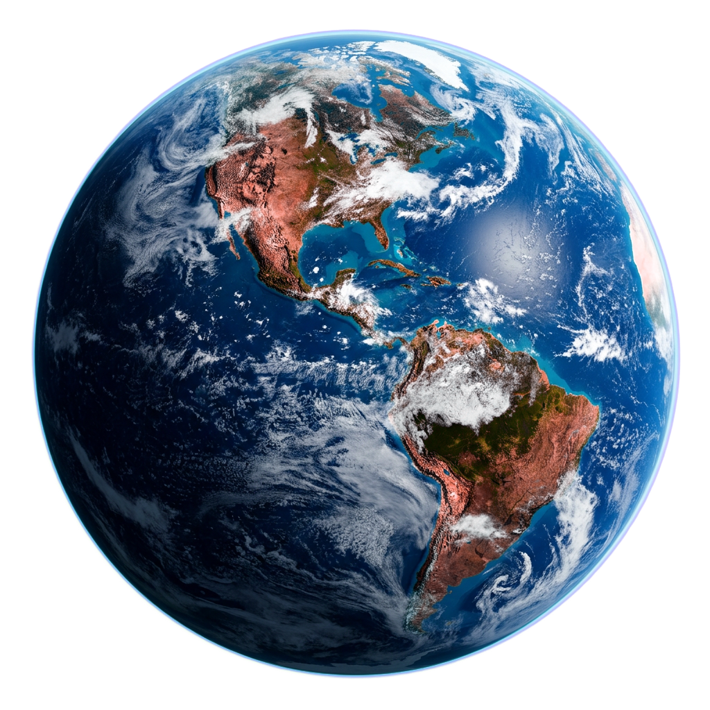
되찾은 지구Earth reclaimed
봉쇄력 100년 12월, 태양계 지구 궤도에서 — 우리는 마침내 그를 격파했다. 우르사 메이저의 거대한 선체가 빛 속에서 무너지자, 100년간 지구를 둘러쌌던 검은 시공간 안개의 장벽이 거짓말처럼 풀렸다. 별빛이, 그 너머의 푸른 점 — 되찾은 지구가 다시 우리 눈앞에 드러났다. 사령관은 위대한 화랑이 되어, 흩어졌던 인류와 영웅들의 함대를 이끌고 마침내 푸른 지구로 돌아왔다. 폐선의 잔해에서 시작한 항해가 한 행성의 해방으로 끝맺은 이유는 단 하나 — 갇힌 인류에게 잃어버린 집과 하늘을 되돌려주기 위해서였다. 인류가 100년 만에 하늘을 올려다보던 그때, 나는 사령관의 발치에서 아무 말 없이 조용히 꼬리를 흔들었다. 그것이 내가 할 수 있는 가장 깊은 경의였다.
B.E. 100, December. In the Solar System, in Earth orbit — we defeated him at last. As Ursa Major's vast hull crumbled in the light, the black wall of spacetime fog that had ringed Earth for a century broke open like a lie undone. Starlight, and beyond it a blue dot — Earth reclaimed — appeared again before our eyes. The Commander became the great Hwarang and, leading the fleet of scattered humanity and heroes, returned at last to the blue Earth. The voyage that began from the wreckage of a derelict ended in the liberation of a world for one reason alone — to give imprisoned humanity back its lost home and sky. As humankind looked up at the heavens for the first time in a hundred years, I quietly wagged my tail at the Commander's feet, saying nothing. It was the deepest respect I could offer.
제6지 · 총독 시대 (행성 26~30)Log VI · The Governor Era (Planets 26–30)연대기 7 / 7Chronicle 7 / 7📖 일지 공개Journal
💬 컷씬 — "총독의 시대"Cutscene — "The Governor Era"
대연합Grand Coalition "프록시마B부터 글리제 균열까지 — 빅 픽처 스페이스를 유일한 중립 총독으로 인정한다.""From Proxima B to the Gliese Rift — we recognize Big Picture Space as the sole neutral Governor."
백구Baekgu "우두머리가 사라진 빈자리. 지배가 아니라 균형을 위한 통치입니다.""The void the lord left behind — governance for balance, not for rule."
💬 컷씬 — "관할권 인수"Cutscene — "Taking Jurisdiction"
사령관Commander "세수 일부는 본래 팩션에 돌려준다. 우린 지배자가 아니라 중재자다.""A share of the taxes returns to each faction. We are mediators, not rulers."
💬 컷씬 — 보이드 "공허의 메아리"Cutscene — Void "Echo of the Void"
레이든Raiden "우르사 메이저는 문지기에 불과했다… 글리제 균열 너머를 보라.""Ursa Major was merely a gatekeeper… look beyond the Gliese Rift."
아인슈타인Einstein "(데이터를 보며) 이건 한 제국의 문제가 아니오. 그 너머의 더 깊은 어둠이오.""(reading the data) This is no single empire. It is a deeper darkness beyond."
💬 컷씬 — "항해는 계속"Cutscene — "The Voyage Continues"
백구Baekgu "두렵지 않아요. 폐선에서 시작해 지구를 되찾은 우리잖아요.""I'm not afraid. We began from a derelict and reclaimed Earth."
사령관Commander "다음 좌표로. 우리의 항해는 — 멈추지 않는다.""On to the next coordinates. Our voyage — never stops."
🐕 백구의 항해 일지 — 제6지 총독 시대Baekgu's Journal — Log VI, The Governor Era
01. 정치 공백01. The Vacuum
7대 문명권 · {회사}7 civilizations · {회사}
봉쇄력 101년 3월B.E. 101 · Mar
프록시마B ~ 보이드 균열 전 항로All lanes, Proxima B to the Void rifts
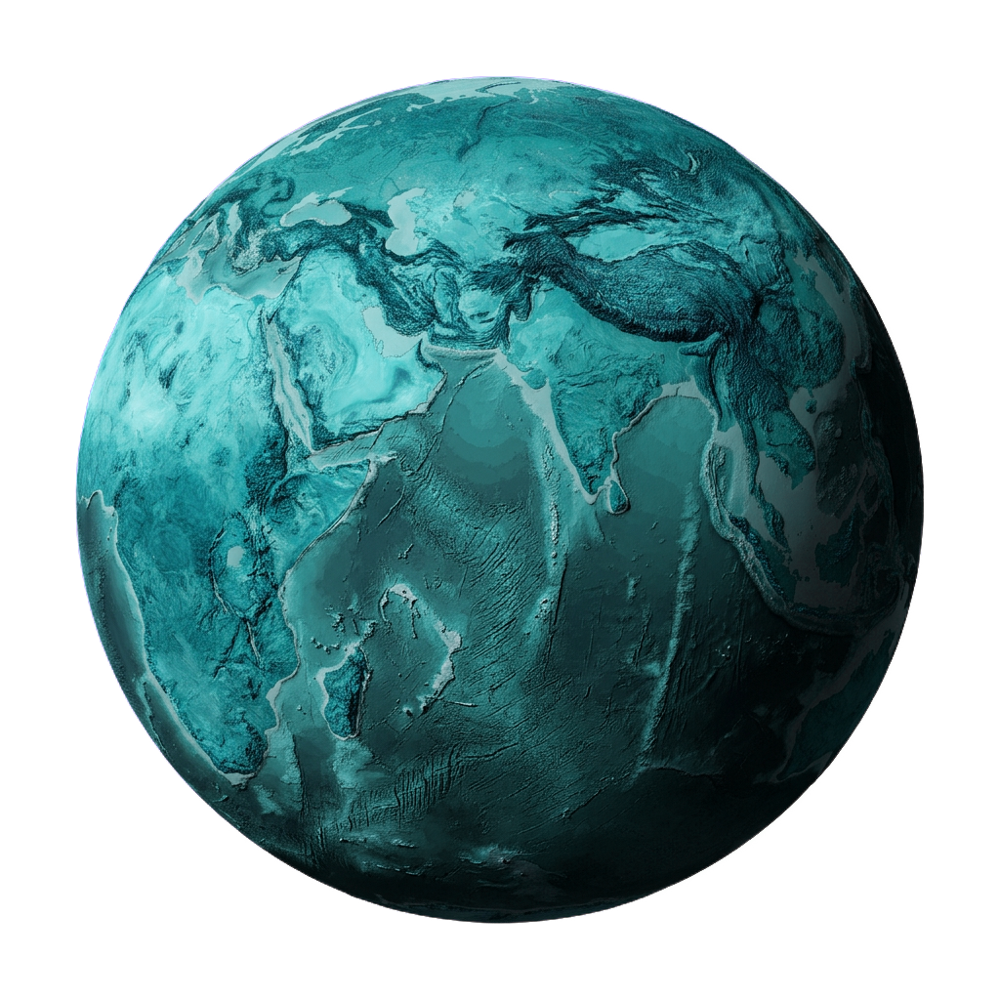
무주공산 항로Ownerless lanes
봉쇄력 101년 3월, 지구 귀환 후 3개월이 지난 무렵, 프록시마B부터 보이드 균열까지 은하 전역에 예상치 못한 그림자가 드리웠다. 우르사 메이저가 사라지자, 그가 강압으로 유지하던 질서마저 함께 사라져 거대한 정치 공백이 남은 것이다. 7대 문명권은 서로를 견제하기 시작했고, 우두머리가 쥐고 있던 항로들은 하루아침에 무주공산이 되어 그 빈 길마다 분쟁의 불씨가 튀었다. 적을 무너뜨린 것이 끝이 아니었던 이유는, 그가 남긴 빈자리를 누군가는 책임져야 했기 때문이다. 강압적 질서가 무너지며 은하의 균형이 깨지자, 해방은 곧 새로운 질문의 시작이 되었다.
B.E. 101, March. About three months after our return to Earth, an unexpected shadow fell across the galaxy. With Ursa Major gone, the order he had held by force vanished with him, leaving a vast political vacuum. The seven civilizations began to eye one another warily, and the lanes the lord had gripped became ownerless overnight, sparks of conflict flying on every empty road. Defeating the enemy was not the end, because someone had to answer for the void he left behind. As the coercive order collapsed and the galaxy's balance broke, liberation became the start of a new question.
02. 총독 임명02. The Governor
{회사}(중립 총독){회사} (neutral Governor)
봉쇄력 101년 4월B.E. 101 · Apr
대연합 총회 · 프록시마B~글리제 균열Grand Assembly · Proxima B–Gliese Rift
관할권 증서Jurisdiction deed
봉쇄력 101년 4월, 혼란을 끝내기 위해 대연합 총회가 소집됐다. 그들은 결의했다 — 모든 문명권이 우리 {회사}를 유일한 중립 총독 세력으로 인정한다고. 어느 한 팩션의 편도 아니었기에, 오히려 모두가 신뢰할 수 있는 단 하나의 중재자가 바로 우리였다. 우리는 프록시마B부터 글리제 균열 균열까지, 행성별 총독 경매를 통해 관할권 증서를 하나씩 인수했다. 단, 세수입의 일부는 본래 그 행성을 다스리던 문명권에 되돌려주는 조건이었다. 우리가 지배 대신 이런 균형의 통치를 택한 이유는, 우두머리가 사라진 은하에 새 질서를 다시 세우기 위해서였다. 은하지도 위에 우리의 총독 표식이 하나씩 켜질 때마다, 무너졌던 질서가 다시 짜이는 소리가 들렸다.
B.E. 101, April. To end the chaos, the Grand Coalition Assembly was convened. They resolved that every civilization would recognize our {회사} as the sole neutral Governor power. Precisely because we took no single faction's side, we were the one mediator all could trust. From Proxima B to the Gliese Rift Rift, we took over jurisdiction deeds one by one through planetary governor auctions — on the condition that a share of the tax revenue returned to the civilization that had originally ruled each world. We chose this governance of balance over domination in order to rebuild a new order in a galaxy left without its lord. Each time a Governor mark lit up on the star map, I could hear the broken order being woven back together.
03. 심연의 전령03. Herald of the Abyss
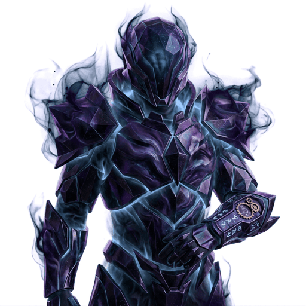
블랙팔콘 전령 레이든Black Falcon's herald, Raiden
봉쇄력 101년 5월B.E. 101 · May
글리제 균열 ~ 제타 레티쿨리(보이드 심연)Gliese Rift – Zeta Reticuli (Void Abyss)
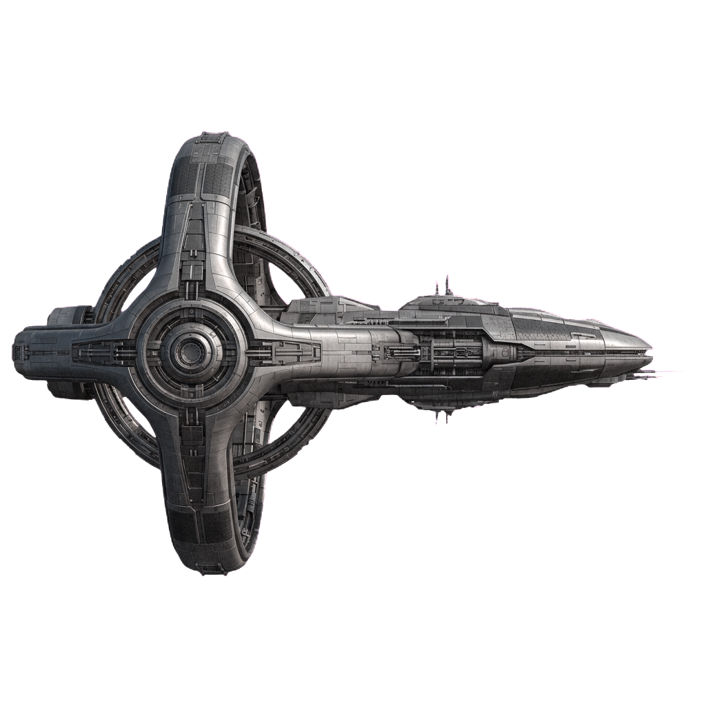
균열 너머의 함영Shadow beyond the rift
봉쇄력 101년 5월, 평화는 결말이 아니었다. 가장 깊고 어두운 보이드의 심연, 그 균열 너머에서 한 그림자가 솟아올랐다 — 블랙팔콘의 전령 레이든이었다. 우르사 메이저조차 한낱 문지기에 불과했음을 알리려는 듯, 균열 너머에서 더 거대한 함영이 꿈틀댔다. 아인슈타인이 그 균열의 데이터를 분석하며 낯빛이 굳었다. 레이든이 모습을 드러낸 이유는, 우리가 마주한 적이 한 제국이 아니라 그 너머의 더 깊은 어둠임을 깨닫게 하려는 것 같았다. 나는 함교 창 너머로 그 심연을 오래 바라보았다. 두려움이 없다면 거짓말이리라. 그러나 우리는 이미 한 번, 불가능을 무너뜨린 함대였다.
B.E. 101, May. Peace was not the ending. From the deepest, darkest Void Abyss, beyond the rift, a shadow rose — Raiden, herald of the Black Falcon. As if to declare that even Ursa Major had been a mere gatekeeper, a far greater shadow stirred beyond the rift. Einstein's face hardened as he analyzed the rift's data. Raiden seemed to appear in order to make us realize that the enemy we faced was not one empire, but a deeper darkness beyond it. I stared a long while at that abyss through the bridge window. It would be a lie to say I felt no fear. But we were already a fleet that had once brought down the impossible.
04. 항해는 계속04. The Voyage Continues
사령관 · 백구Commander · Baekgu
봉쇄력 101년 5월B.E. 101 · May
지구 궤도 → 다음 좌표Earth orbit → next coordinates
다시 불 붙인 {함선}The {함선}, relit
봉쇄력 101년 5월, 지구 궤도에서 다음 좌표를 바라보며 — 그래도 나는 두렵지 않았다. 우리가 어디서 시작했는지를 똑똑히 기억하기 때문이다. 에너지 7%의 폐선, 먼지 쌓인 격납고, 단 한 척의 낡은 {함선}. 그 잔해에서 출발해 사령관과 나는 은하를 건너 봉쇄를 깨고 지구를 되찾았다. 전설의 영웅들이 우리 깃발 아래 모였고, 흩어졌던 인류가 다시 하늘을 올려다보게 되었다. 이제 심연이 새로운 도전장을 내밀어도 우리가 또다시 엔진에 불을 붙이려는 이유는, 사령관과 나 백구가 함께라면 어떤 어둠도 건널 수 있다는 믿음 때문이다. 운항기록의 이 페이지는 여기서 멈추지만, 우리의 항해는 결코 멈추지 않는다.
B.E. 101, May. In Earth orbit, gazing toward the next coordinates — even so, I was not afraid, because I remember clearly where we began. A derelict at 7% power, a dust-choked hangar, a single battered {함선}. From that wreckage the Commander and I crossed the galaxy, broke the blockade, and reclaimed Earth. Legendary heroes gathered beneath our banner, and scattered humanity looked up at the sky once more. Now, even as the abyss issues a new challenge, the reason we will light the engine again is this: as long as the Commander and I, Baekgu, are together, we can cross any darkness. This page of the voyage log stops here — but our voyage never stops.
— 운항기록 · 백구의 항해일지 확장본 (6페이즈 × 4엔트리) · KO/EN · 게임 미반영 —
— Voyage Log · Baekgu's Journal, expanded (6 phases × 4 entries) · KO/EN · not applied to the game —